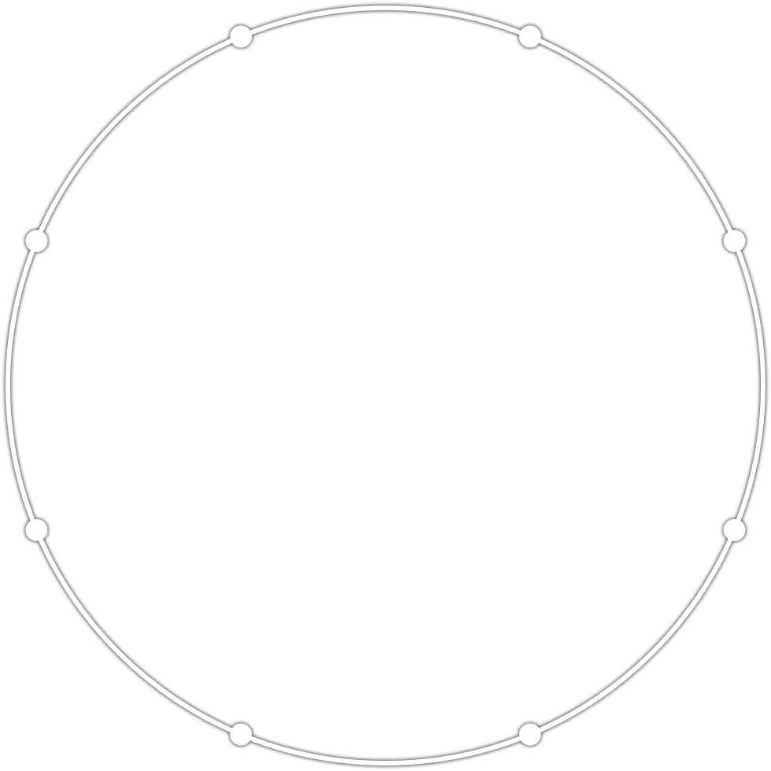

+
-
skip_previous
stop
play_arrow
keyboard_arrow_down
keyboard
right_panel_close
fullscreen
menu
檔案
chevron_right
功能/工具
chevron_right
譜面資訊
前往Play
設定
edit
復原
重作
順時針旋轉
逆時針旋轉
180度旋轉
上下反轉
左右反轉
尋找與取代
切分細分與轉換
格式化文件 (Format)
切換/加入 Break
切換/加入 EX
help
基礎操作
快速鍵
變更日誌
關於
顯示模式
偏移
難度切換
-
播放速度
+
拍號
/
預備拍
▲
warning0
swap_vert
swap_horiz
rotate_left
rotate_right
sync
redo
keyboard
undo